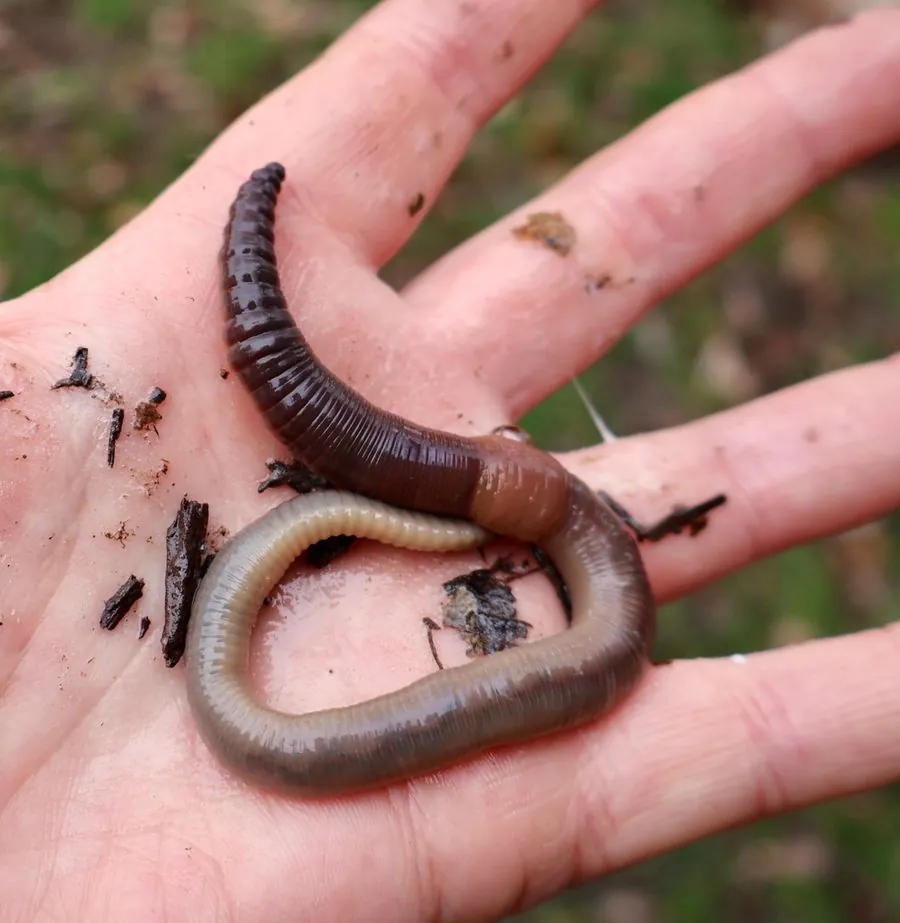

其他无脊椎动物 · 动物界
欧洲蝼蚓 Lumbricus terrestris

体形粗大的常见蚯蚓，夜间爬到地表拖取落叶入洞，通过取食和排泄改良土壤，被称为生态系统工程师。
- 分类
- 门环节动物门纲环带纲目后孔寡毛目科正蚓科属正蚓属
- 栖息环境
- 草地、农田、花园和落叶林土壤，夜间到地表活动
- 地理分布
- 原产欧洲，现随人类活动扩散至北美等地
- 保护级别
- 暂无评估
物种志
欧洲蝼蚓体长 9–30 cm，体节 110–160 节，体色红褐至紫褐色，前端颜色较深，环带位于体前部，呈马鞍状。它没有骨骼，靠体壁肌肉和刚毛在土壤中蠕动前进。
它夜间活动，在土壤中挖掘垂直洞穴，深度可达 1–2 m，并把落叶拖到洞口慢慢取食，属于表栖型蚯蚓。食性以腐叶和土壤有机质为主，排泄物形成团粒结构，能改良土壤通气性和保水性，促进养分循环，因此被称为土壤生态系统工程师。欧洲蝼蚓雌雄同体，异体受精，交配后产卵茧于土壤中。它原产欧洲，随人类活动传入北美等地。达尔文晚年在《腐殖土的形成》一书中详细记录了蚯蚓对土壤的作用，这也是他最后一部著作。
形态与习性
- 食性取食腐叶和土壤有机质，夜间拖落叶入洞
- 体长约 9–30 cm，体节 110–160 节
- 洞穴垂直洞穴深可达 1–2 m
- 繁殖异体受精，产卵茧于土壤中
- 生态作用改良土壤结构、促进养分循环
- 习性夜间活动，雨后常爬出地面
趣味知识
- 达尔文晚年长期观察蚯蚓，并写成《腐殖土的形成》一书。
- 欧洲蝼蚓会把落叶拖进洞口慢慢取食，洞口常堆着小土团。
- 蚯蚓没有肺，靠皮肤呼吸，所以雨后土壤积水时会爬出地面。